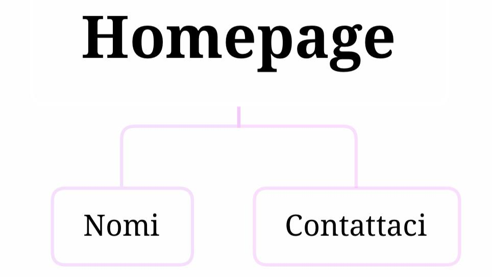
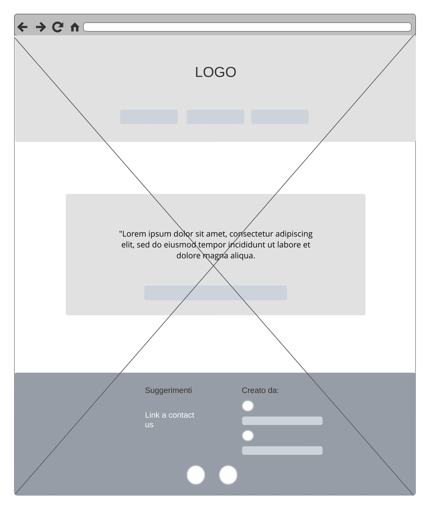
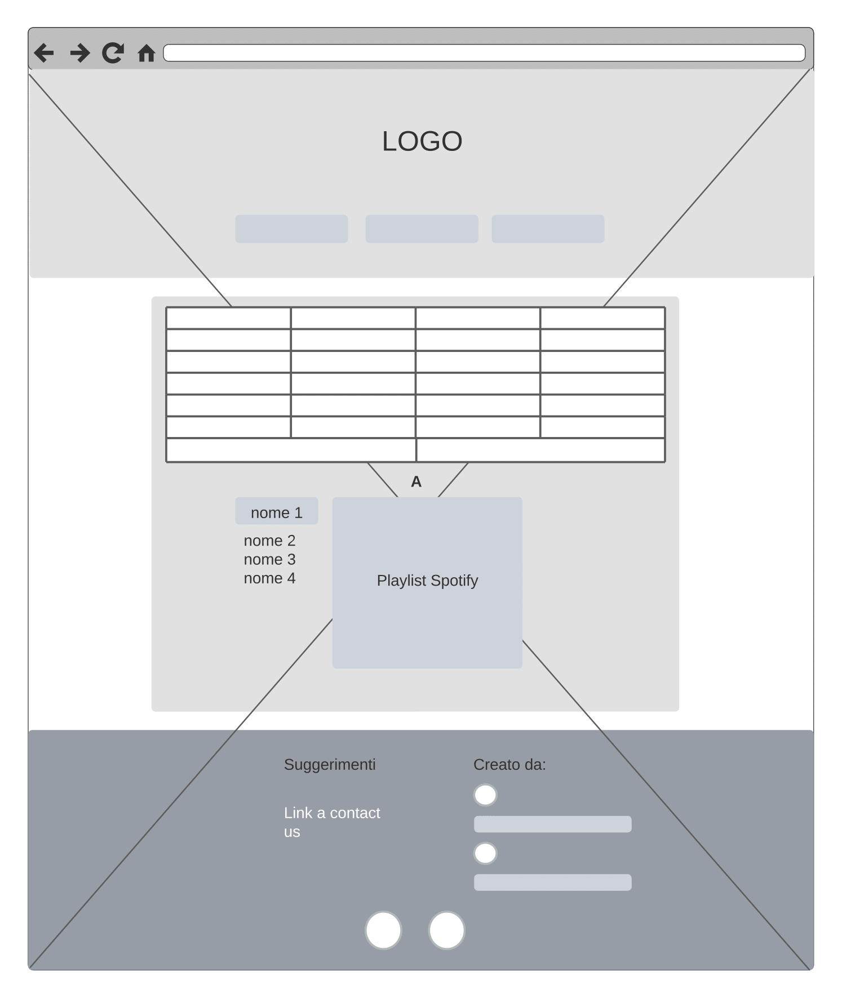
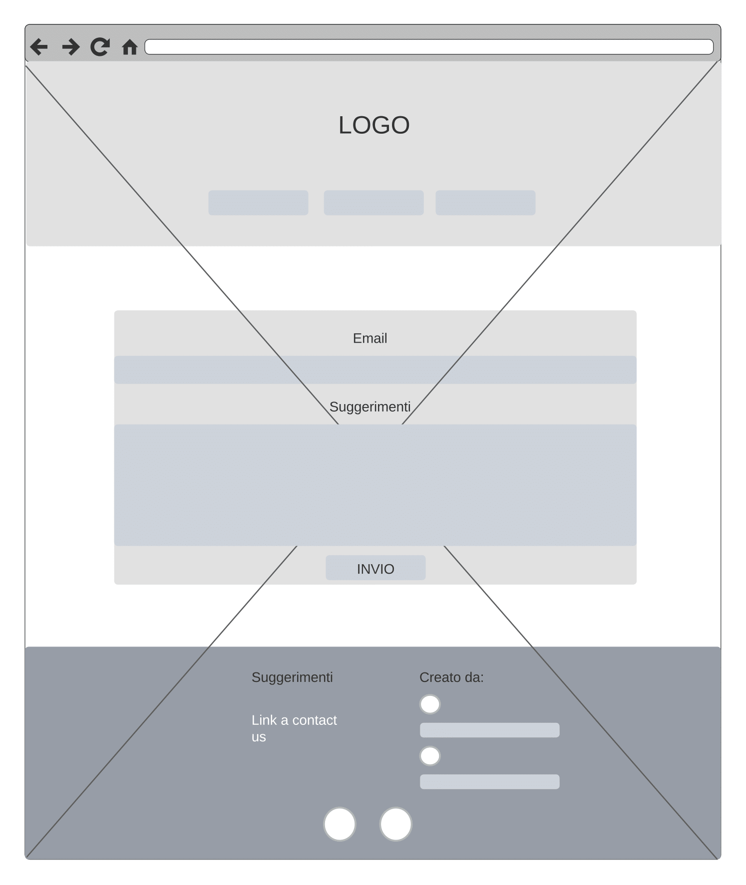

PROJECT MANAGMENT PLAN
Benchmarking
1. Obiettivi
L’obbiettivo principale del sito è permettere alle persone di trovare una playlist contente tutte le canzoni dedicate ad un determinato nome grazie ad un’unica piattaforma.
2. Target utente
Tutti coloro che amano ascoltare musica, ma in particolare la fascia d’età a cui ci indirizziamo è tra i 14 e i 30.
3. Competitors
Tra i competitor di “byName” abbiamo individuato Snapitaly e Nomix:
- Snapitaly
è un Magazine che racconta l’Italia in tutte le sue sfaccettature, all’interno del sito sono presenti più sezioni: viaggi, enogastronomia, moda, spettacolo, business e startup, arte e design e infine sport. Sebbene abbia una struttura e degli obiettivi completamente diversi dal nostro sito, snapitaly presenta una articolo in cui sono presenti le canzoni con nomi femminili cantate da artisti italiani. Viene brevemente presentata la storia della canzone (l’album da cui è tratta, a chi è dedicata ecc.) e l’artista, sopra la descrizione viene allegato inoltre il collegamento della canzone tramite YouTube.
- Nomix
è un sito web dedicato a tutti i nomi e al loro significato. Sono presenti le sezioni: nomi italiani, nomi per bambini, nomi stranieri, calcolatori, curiosità. Sebbene molto più vicino ai nostri obiettivi rispetto a snapitaly il target utente di Nomix è completamente diverso dal nostro perché evidentemente rivolto a neo genitori in cerca del nome adatto da dare al proprio nascituro.
All’interno del sito è presente una sezione (all’interno di curiosità) chiamata canzoni con i nomi in cui vengono presentate i titoli delle canzoni in ordine alfabetico.
STRUTTURA E LAYOUT
1. Architettura del sito

2. Wireframe



3. Look and feel
Le pagine presentano uno stile semplice, pulito e minimalista in modo tale da garantire all'utente una navigazione rapida ed efficiente.
FONT:
Libreria Font utilizzata: Google Fonts
-FONT 1: Belgrano
-FONT 2: Prompt
-Font Logo: Kaushan Script
PALETTE CROMATICA:
#F72584
#FDF705
#FB8D45
Bianco
Nero
Le pagine sono caratterizzate dalla ripetizione della medesima struttura grafica, semplice e minimal per facilitare l’esperienza dell’utente.
Per tanto, in tutte le pagine, troviamo:
-uno sfondo con bassa intensità
-navbar centrale e intuitiva
-footer
La palette scelta cerca di far risaltare gli aspetti più importanti del sito, come il logo e i pulsanti che permettono all’utente di interagire, grazie al colore fucsia.
Nel logo è presente una sfumatura che va dal fucsia al giallo, passando per l’arancione, per mettere in evidenza il suo elemento grafico (nota musicale).
LINGUAGGI E STRUMENTI
1. Linguaggi
I linguaggi utilizzati sono: HTML5, CSS e Javascript
2. Strumenti
Sono stati utilizzati:
-Sublime text 2 come text editor
-Google fonts per i font
-Gimp per la realizzazione del logo
-Bootstrap per supporto grafica
-Google Analytics per le statistiche sulle visite del sito
-Whatsapp, Instagram e Twitter per la promozione e condivisione del sitoweb.
-GitHub per la pubblicazione del sito web
-FontAwesome per le icone
-Google Chrome per lo sfondo
-Spotify per il collegamento alle playlist
COMUNICATION STRATEGY PLAN
1. Background
I nostri competitors regalano ai propri utenti un’esperienza più ampia ma allo stesso tempo dispersiva. Infatti, i loro siti offrono un maggior numero di pagine e collegamenti, i quali però rendono la navigazione più confusa. Nel caso di Nomix inoltre, il gran numero di pubblicità presenti sposta i vari elementi, aspetto che rende l’usabilità minima e non piacevole.
Rispetto ad essi, ma anche alle varie piattaforme musicali, il nostro sito offre un’esperienza più mirata ai suoi fruitori, che consiste appunto nell’offerta di playlist specifiche per determinati nomi, divisi in ordine alfabetico.
2. Obiettivi comunicativi
L’obiettivo del nostro sito è quello di creare un’interazione stimolante e divertente tra l’utente e la piattaforma, avvicinandolo alla musica tramite la connessione con un nome.
-Gli obbiettivi che ci siamo prefissati per determinare il successo del nostro sito sono:
-Raggiungimento di un minimo di 150 utenti
-Iscrizioni di almeno 10 utenti alla pagina ufficiale Spotify di “byName”
3. Target audience e messaggio
Nonostante il nostro sito sia indirizzato principalmente a persone di giovane età, il tema che lo caratterizza e la semplicità di fruizione permette al target utente di estendersi.
Il principale target a cui ci rivolgiamo è quello di persone comprese nella fascia di età dai 14 ai 30, facilmente raggiungibile grazie all’utilizzo dei social media.
Grazie però al tema della musica e alla semplicità del sito stesso permette l’espansione del target utente, il quale può accedervi tramite la piattaforma Google.
4. Promozione
Abbiamo scelto di promuovere il sito tramite:
-Whatsapp
-Instagram
-Twitter
5. Valutazione dei risultati
Stiamo raccogliendo i dati...